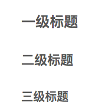

工欲善其事，必先利其器。
你需要使用 Markdown 吗？
Markdown 是一种纯文本标记语言，目的是希望大家使用「易于阅读、易于撰写的纯文字格式」来写作。如果你想要写博客文章，或者做文字类的内容，可以了解一下 Markdown。用户只要使用一些简单的标记符号，就能生成极富表现力的文档。其特点如下：
- 纯文本，可以使用任意文本编辑器写作。
- 专注于内容，标记语法非常轻量且可读性强。
- 内容与样式分离，且可以导出为 PDF 或 HTML 文件。
标题
在标题内容前输入 1～6 个井号「#」来实现对应级别的HTML样式的标题 h1 ~ h6 。例如：
|
|
效果如下：

正文
不加任何标记符时，就是正文内容。
效果如下：
假如我是一朵雪花，
翩翩的在半空里潇洒，
我一定认清我的方向——
飞扬，飞扬，飞扬，——
这地面上有我的方向。
加粗、斜体
粗体使用两个「」包围，斜体使用一个「」包围。
效果如下：
假如我是一朵雪花，
翩翩的在半空里潇洒，
引用
在被引用的内容段落开头加上右尖括号「>」即可。
效果如下：
假如我是一朵雪花，
翩翩的在半空里潇洒，
列表（无序、有序）
在无序列表内容前加上「-」或「*」（我比较喜欢「-」号），在有序列表内容前加上序号「1. 2. 3. 」。
效果如下：
无序
- 假如我是一朵雪花，
- 翩翩的在半空里潇洒，
有序
- 假如我是一朵雪花，
- 翩翩的在半空里潇洒，
超链接
使用方法：[链接文字](链接地址)
效果如下：
百度
图片

效果如下：
表格
|
|
效果如下：
| 列1 | 列2 | 列3 |
|---|---|---|
| 行1列1 | 行1列2 | 行1列3 |
| 行2列1 | 行2列2 | 行2列3 |
横线
用三个以上的星号、减号、底线来建立一个分隔线，行内不能有其他东西。
效果如下：
代码（行内、代码块）
行内示例
效果如下：<div>block</div>
代码块示例
效果如下：
|
|
小彩蛋
- 想必大家也猜到了，本文就是使用 Markdown 标记语言写的。
- 目前各平台都有软件支持 Markdown 的语法高亮和实时预览。
- 除了以上这些常用的排版标记，Markdown 还支持以下的一些比较复杂的功能：
任务列表、流程图、序列图、甘特图、MathJax、Latex、脚注、注释和阅读更多。